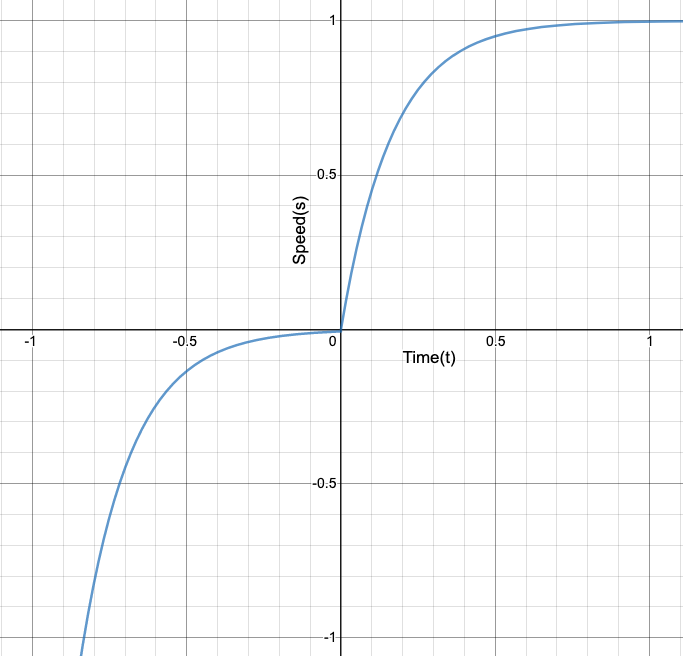

SigmoidDrive
Background
The procedure described in this post is to make a robot's drivetrain change in speed by following a sigmoid function. In previous years, we would simply pass in the the joystick value as the speed for the drivetrain to move at. An issue that can occur through this is that if the driver is going full speed forward and then decides to suddenly go full speed backwards the sudden change can cause motors or gears to break or get damaged (Figure 1). Our first attempts to change this was to use PID loops to smooth the transition, but the issue we saw with PID loops is that we had no proper way to predict a graph of the change based on the PID values prior to driving the robot, and the graphs we got after driving the robots did not display the speed change we hoped for (Figure 2 is similar to what we saw). Our programming mentor suggested we program the drivetrain to follow a sigmoid curve and after viewing the curve, we saw that it was the best solution to our problem (Figure 3).

Sigmoid Graph (Figure 3)
A Similar Graph To the PID changes (Figure 2)
Bad Sudden Change (Figure 1)
Programming
Equations
For our sigmoid equation for speed which the robot has to follow, the range of that equation should be from -1 to 1. The normal sigmoid function y = 1/(1 + e^(-x)) has a range of 0 to 1, so with adjustments to meet our need, we can use the equation y = 2 /(1 + e^(-x * A)) - 1, where A is a variable we can change to adjust the acceleration between the values -1 and 1.
private double sigmoid(double time, double a) {
return 2 / (1 + Math.pow(Math.E, -time * a)) - 1;
}
Another important equation for this procedure is the inverse of our sigmoid equation. This is needed because since the speed of the robot will be changing as it progresses along the sigmoid equation, the inverse equation can let us know the X value (time) the current speed was just at. To determine the inverse of any equation, the y and x values should be switched and then simplifed to the form y = ___ . The inverse of the sigmoid equation is, y = -ln((2 / (x + 1)) - 1) / A
private double inverseSig(double speed, double a) {
return -Math.log(2 / (speed + 1) - 1) / a;
}
Procedure
The procedure our team created relies on the fact that the roborio loops the code roughly every 200 milliseconds. So using this fact we can have the robot speed progress along the sigmoid equation to the speed inputted by the joystick.
Instance Variables
Two int arrays of length 2 are kept as instance variables within the drivetrain class to keep track of the robot's speeds. The reason each of these arrays are of length 2 is because the left and right side of the robot move at different speeds in order to make turns. If necessary, you could have each wheel move at different speeds and have the length of each array be equal to the number of wheels, but that would be a rare scenario. These arrays are labeled desiredSpeeds and currentSpeeds, the former holds the speeds being inputted by the joysticks (the desired values), and the latter holds the real speeds of the drivetrain as it progresses through the equation.
Code
The following code is for the method which progresses the speed of the robot along the sigmoid equation, the comments explain what each part does.
private double getSideSigValue(double speed, boolean isRight, double a){
//Determines the index of the array, left - 0, right - 1
int index = 0;
if(isRight)
index = 1;
//The sigmoid function can never reach 1 or -1, so this caps the input
if(speed > 0.99 || speed < -0.99)
speed = speed * 0.99;
//Records the desired speed, and if that has been roughly reached by
//the function, return the desired speed.
desiredSpeeds[index] = speed;
if (Math.abs(desiredSpeeds[index] - currentSpeeds[index]) < 0.01)
return desiredSpeeds[index];
//Calculates the current x value in the function
double startTime = inverseSig(currentSpeeds[index], a);
//Used to get the next value the robot should use
double cycleTime = 0.02;
if (desiredSpeeds[index] < currentSpeeds[index])
cycleTime = -cycleTime;
return sigmoid(startTime + cycleTime, a);
}
The remaining methods simply call the getSideSigValue() method and apply the returned values.
public void sigmoidDrive() {
sigmoidMove(Robot.oi.j0.getY(), Robot.oi.j1.getY());
}
public void sigmoidMove(double leftSpeed, double rightSpeed) {
sigmoidMove(leftSpeed, rightSpeed, Constants.SIGMOID_A);
}
public void sigmoidMove(double leftSpeed, double rightSpeed, double a) {
leftSpeed = getSideSigValue(leftSpeed, false, a);
rightSpeed = getSideSigValue(rightSpeed, true, a);
move(leftSpeed, rightSpeed);
}
public void move(double leftSpeed, double rightSpeed) {
RobotMap.driveBase.tankDrive(leftSpeed, rightSpeed);
currentSpeeds[0] = leftSpeed;
currentSpeeds[1] = rightSpeed;
}
This drive method is used the same way as an ordinary drivetrain drive method, it has to be called in the execute() method of a Command class and that Command should be the defualt command of the DriveTrain class. This way, this code will be repeatedly called and the transition will be smooth.
The A Value
As stated earlier, the A value can be set to any number to increase the acceleration between the values -1 and 1. For testing this code to make sure it performs as expected, I would suggest using A values between 2 - 5, because the wheel changing speed to match the joystick values will be most visual. For our team, we let our mechanical mentor adjust the A value himself and he settled on the value of 25. With this high value, the wheel speed adjustment is quick and barely noticiable but still there, thereby stopping any motors from breaking from sudden changes. I would not reccommend using very high values because then it will take the robot too long to perform the calculations for the equations. For gameplay, our value of 25 worked very well, and we used lower values to have the robot accelerate and decelerate during autonomous. A benefit to using this procedure rather than PID loops is that you can graph the sigmoid equation, using sites like Desmos, and find what kind of acceleration you would like.
Future Work
Our use of this procedure resulted in no gear breaking problems from sudden changes during the 2019 season, so we can label this as a success. With this procedure, not just a sigmoid equation but any function can be used to control the robot speed. As long as the inverse function can be written, the sigmoid function can be replaced.
Initially this year, we wanted to create a 100% custom drivetrain class, without using the FRC provided DifferentialDrive library. Our reasoning behind this was so that we could have each one of our six wheels move independent of any other and have traction control if one wheel spun out. We didn't end up doing this because when trying to use even a normal drive movement by sending power to the wheels, we would get slight jittery movement, regardless of our attempts. Also, the traction control wasn't viewed as a necessary ability by our programming mentor, so we decided to pick up that idea another time. Possibly in the future we will go back and try again to do these things.